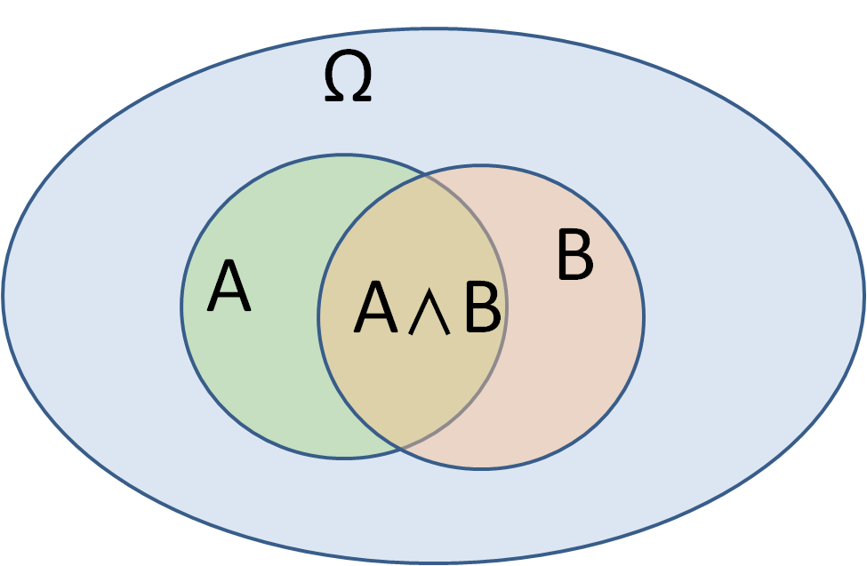
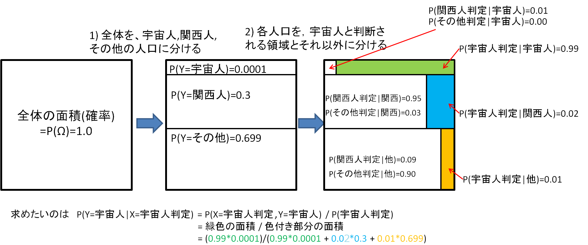

確率論 2
必要となるたびに勉強しては、すぐ忘れてしまう確率論の用語等を、自分のために一通りまとめておく。
今回参考にしたのは、以下の2冊。(両方とも値段以上の価値のある良書だと思います。)
- [1]結城浩, 数学ガール(乱択アルゴリズム)
- [2]平岡和幸, 堀玄 プログラミングのための確率統計
戻る 確率論3へ
複数の事象, 複数の確率変数(離散分布)
-離散確率分布の場合 : 標本空間Ωにおける2個の事象A, Bを考える．
- 同時確立 : P(A,B) : 事象A∧Bが起こる確率
- 周辺確立 : P(A)， P(B) : (事象Bはなんでもいいから)事象Aが起こる確率, と, (事象Aはなんでもいいから)事象Bが起こる確率
- 条件付き確率 ： P(B|A) = P(B,A)/P(A) : 事象Aが起こった下で事象Bが起こる確率
P(A|B) = P(A,B)/P(B) : 事象Bが起こった下で事象Aが起こる確率
(ベイズ推定においては事後確率とも呼ばれる)
例. Ω : 日本人, A : 男性, B:血液型がO型
P(A∧B) : 日本人を一人サンプリングしたときに, その人が, 男性かつO型である 確率
P(A) : 日本人を一人サンプリングしたときに, その人が, 男性である 確率
P(B|A) :日本人を一人サンプリングして, その人が 男性である 事を確認した下で、彼がO型である確率

- 確率変数を導入 : 2個のランダムな値をとる確率変数XYに対して,
- 同時確立 : P(X=a,Y=b) : X=a , Y=b となる起こる確率．
- 周辺確立 : P(X=a), P(Y=b) : Yはどんな値をとっても良いがX=aとなる確率， と, Xはどんな値をとっても良いがY=bとなる確率．
- 条件付き確率 ： P(Y=b|X=a)=P(X=a,Y=b)/P(X=a) : X=aを観測した下で，Y=bとなる確率．
例 ： 出る目が等確率なサイコロを2回振ったときに, 確率変数Xを1回目のサイコロの数字, 確率変数Yを2回のサイコロの和, とする
P(X=4,Y=9) = 1/36
P(X=4) = 1/6
P(Y=9) = 4/36
P(Y=9|X=4) = 1/6
-
同時確立と周辺確立には以下の関係がある
 = \sum_{b}^{}P(X=a, Y=b))
X=aを固定して，Yが取り得る値全てを入れてその確率を足し合わせると、P(X=a)
 = \sum_{a}^{}P(X=a, Y=b))
Y=bを固定して，Xに取り得る値全てをいれて その確率を足し合わせると、P(Y=b)
同時確率分布がわかれば(すべてのXYの取り得る値の組み合わせに対して，それの起こる確率がわかれば)，XYの周辺分布や条件付き確率などが計算できる．
ベイズの公式 (離散分布)
ベイズの公式でできる事をまとめると...
- ランダムに変化する原因Yの起こる確率が分かっており,( P(Y=b1), P(Y=b2) ,..., P(Y=bN)はknown )
- 任意の原因 Y=bi の下で，結果Xがaになる確率が分かっている, ( P(X=a|Y=b1), P(X=a|Y=b2),..., P(X=a|Y=bN) もknown)
...この下で... ↓
- 結果X = a が観察されたとき,その原因Yがbiである確率が分かる P(Y=bi|X=a)
例題. 関西人, 宇宙人, その他、を識別できる器械を開発した．
1) 東京の人口の
30.00%が関西人,
00.01%が宇宙人,
69.99%がその他
とする．
2) この識別器に
宇宙人を入れると， 1%の確率で関西人, 99%の確率で宇宙人, 0%の確率でその他,
関西人を入れると， 95%の確率で関西人, 2%の確率で宇宙人, 3%の確率でその他,
その他を入れると， 9%の確率で関西人, 1%の確率で宇宙人, 90%の確率でその他,
と判別する.
問) 東京で一人サンプリングして識別器に入れたところ、宇宙人と判定された．この人が本当に宇宙人である確率は?
(1)が原因Y={関西, 宇宙, 他}の確率を表し
(2)が原因の下での結果の確率 P{X={関西, 宇宙, 他} | Y={ 関西, 宇宙, 他}}を表している事に注意．
図を使った解法)

ベイズの公式を使った解法)
ベイズの公式より
P(Y=宇宙人|X=宇宙人判定)
=
P(X=宇宙人判定|Y=宇宙人)P(Y=宇宙人) / P(X=宇宙人判定)
=
P(X=宇宙人判定|Y=宇宙人)P(Y=宇宙人) / { P(Y=関西 , X=宇宙人判定) + P(Y=宇宙 , X=宇宙人判定) + P(Y=その他
, X=宇宙人判定)}
=
P(X=宇宙人判定|Y=宇宙人)P(Y=宇宙人) / {
P(X=宇宙人判定|Y=宇宙人)P(Y=宇宙人) +
P(X=宇宙人判定|Y=関西人)P(Y=関西人) +
P(X=宇宙人判定|Y=その他)P(Y=その他)}
= {
0.99*0.0001}/{
0.99*0.0001+
0.02*0.3+
0.01*0.6999}
=0.007558 つまりこの精度の機械で宇宙人と判断されたら，0.75%程度の確率でその人は宇宙人
問題の前提条件(2)の一部(色つき)しか利用していない事に注意する．
細かいことだが、ここではXYは事象として扱っており， 確率変数ではない（確率変数は個々の事象を実数にマップする関数．）．
結局ベイズ推定は、
原因Yの起こる確率 +
ある原因のもので結果Xが観察される確率 がわかっている下で,
結果X=xを観察 したとき、そもそもの
原因Yがyである確率を求められる P(Y=y|X=x)
複数の事象, 複数の確率変数(連続分布)
- ランダムに値の変化する2個の連続な確率変数 XとYを考える.
連続変数の場合，ちょうどXとYがある値になる確率，P(X=x,Y=y)，は0なので、
確率密度関数を用いて,
同時分布,
周辺分布,
条件付き分布を表す．
- 同時分布は同時確率密度関数
 =f_{XY}(x,y) = f_{YX}(Y=y,X=x) = f_{YX}(y,x))
により定義される
- 同時分布が与えられれば，XとYの作る任意の集合に対して,
 = \int_{a_0}^{a^1}\int_{b_0}^{b^1} \:\; f_{XY}(x,\:y) dxdy)
と確率が計算できる.(同時分布が得られたら、任意のXYの集合に対する確率分布が分かる)
- 下図は，2次元標準正規分布の同時確率密度関数

 = \frac{1}{2\pi\sigma_x\sigma_y}\sqrt{1-p^2} \exp\left{ \frac{(x-\mu_x)^2}{\sigma_x^2} %2B \frac{(y-\mu_y)^2}{\sigma_y^2}- \frac{ 2p(x-\mu_x)(y-\mu_y)}{\sigma_x\sigma_y}\right})
この例ではμx=0.5, μy=1.0, σx=σy=1.0, p = 0.8とした.
- 確率変数Xの周辺分布とは, 確率変数Yの値を気にせずに 確率変数Xの確率分布を考えたもの
- 確率変数Yの周辺分布とは, 確率変数Xの値を気にせずに 確率変数Yの確率分布を考えたもの
- 確率密度関数，f
X(X=x), f
Y(Y=y)で表される．
- 周辺確率密度関数は，同時確率密度関数から計算できる
=\int_{-\infty}^{\infty} \:\: f_{XY}(x,\:y) dy)
=\int_{-\infty}^{\infty} \:\: f_{XY}(x,\:y) dx)
-上式より明らかだが，次の式の形を覚えておく.
 = \int_{a_0}^{a^1}\:\:f_X(x)dx = \int_{a_0}^{a^1}\:\:\int_{-\infty}^{\infty}\:\:f_{XY}\:\:(x,\:\:y) dydx)
- X=a
0が観察された下で, Yの条件付き確率分布は, 条件付き確率密度関数 f
Y|X(Y=y|X=a
0)を用いて表される
- Y=b
0が観察された下で, Xの条件付き確率分布は, 条件付き確率密度関数 f
X|Y(X=x|Y=b
0)を用いて表される
- 条件付き密度関数は，同時密度関数から次のとおり計算できる
 = \frac{f_{YX}(y,\:a_0)}{ f_X(a_0) }, \;\;\;\;\;\; f_{X|Y}(x|b_0) = \frac{f_{XY}(x,\:b_0)}{ f_Y(b_0) })
- 連続確率変数XYでは、ベイズの公式も同時/周辺確率密度関数を用いて表される．
 = \frac{f_{XY}(a,\:b)}{ f_Y(b) } = \frac{f_{XY}(a,\:b)}{ \int_{-\infty}^{\infty} f_{XY}(x,b)dx } = \frac{f_{Y|X}(b|a)f_X(a)}{ \int_{-\infty}^{\infty} f_{Y|X}(b|x)f_X(x)dx})
確率変数の独立性
- 2つの確率変数X Y が, 任意の事象の組み合わせ a,bに対して次(のどれか)を満たすとき, XとYは独立であるという．
 = P(X=a) P(Y=b) )
 = P(X=a))
 = P(Y=b))
- 2つの確率変数X Y が, 任意の事象の組み合わせ a,bに対して次(のどれか)を満たすとき, XとYは独立であるという．
 = f_X(X=a) f_Y(Y=b) )
 = f_X(X=a))
 = f_Y(Y=b))
確率変数XYが独立とは，XとYのあいだに関わりがないということ.
XとYが独立なら、上記のとおり,同時分布や条件付き分布が, もう一方に依存しないものとなる．
XとYが独立なら、ベイズ推定のように， X=aを観察してbの値を推測するなどはナンセンスになる．
戻る 確率論3へ
 = \frac{ P(X=a|Y=b_i)P(Y=b_i) } { P(X=a) } )
P(Y=b_i) } { \sum_{b_i}^{}P(X=a, Y=b_i) } )
P(Y=b_i) } { \sum_{b_i}^{}P(X=a | Y=b_i) P(Y=b_i) } )